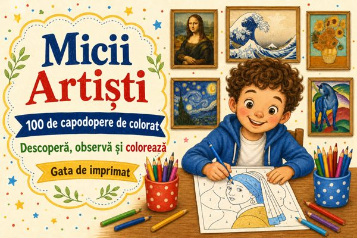

Cartea principală
Micii Artiști — 100 de capodopere de colorat
100 de capodopere de la 60 de mari artiști, de colorat după numere, cu povestea fiecărei opere.
Deschide →Bonusurile tale
Bonusul 1
Primii Pași — 7 zile de mic maestru
7 zile cu câte o capodoperă și o mică misiune: observă, colorează, povestește.
Deschide →Bonusul 2Vânătoarea de Detalii — 30 de misiuni la muzeu
30 de misiuni de observare pentru a găsi culori, forme și detalii ascunse în picturi.
Deschide →Bonusul 3Prima Mea Expoziție — kit complet de expoziție
Etichete, invitații, afiș, pașapoarte, carte de impresii și diplomă pentru expoziția de acasă.
Deschide →Cu ce începi
- Deschide cartea principală, alege o operă din cele 100 și imprimă pagina pe hârtie A4, la dimensiune reală.
- Privește tabloul original, citește curiozitățile și colorează urmând legenda de culori.
- Continuă joaca cu programul de 7 zile din Primii Pași și cu cele 30 de misiuni din Vânătoarea de Detalii.
- Când ai câteva lucrări gata, pregătește expoziția cu kitul Prima Mea Expoziție.
Pentru uz personal, în familie sau în clasă. Revânzarea și redistribuirea sunt interzise.